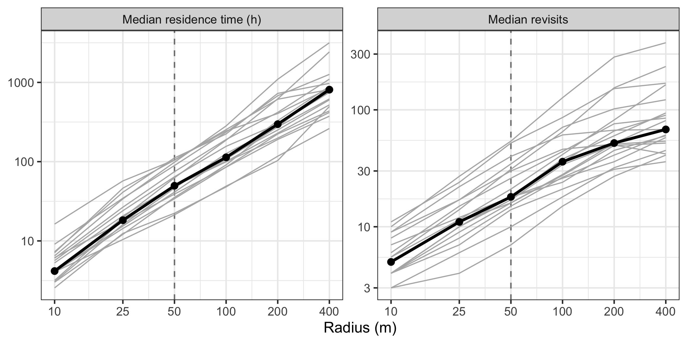
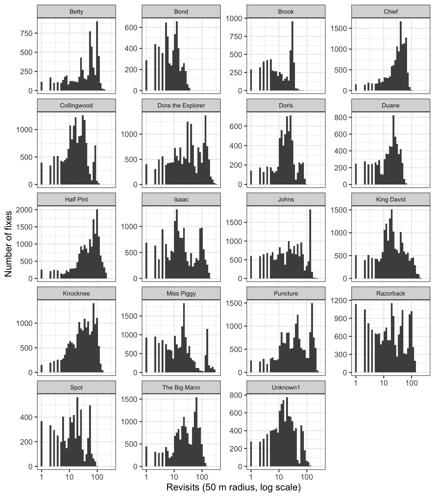
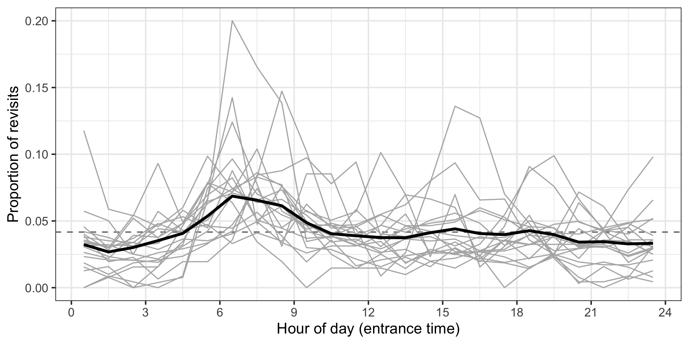

Revisitation
East Alligator
Quantifying how often feral pigs in East Alligator return to the same places, using the revisitation analysis of Bracis et al. (2018) and the recurse package. For each of the 19 GPS-collared pigs (30 minute fixes, September 2025 to October 2026), we drew a 50 m radius circle around a location and counted the number of separate visits to it (revisits), the time spent inside it on each visit, the total residence time, and the time between visits (return interval), with entrance and exit times interpolated between fixes. Excursions outside the circle of less than 1 hour were not counted as new visits, and visits interpolated across gaps of more than 2 hours in the fixes were excluded from the visit duration and return interval statistics.
The pigs repeatedly re-used small areas, with a median of 18 revisits (range 8-56 across pigs) within 50 m of each fix. We identified 104 revisitation sites (2-11 per pig), most commonly in dry rainforest, and 78 of these were visited by more than one pig (up to 7). Sites were revisited a median of 118 times by the pig they were identified from, most return intervals were within a day (83%), with peaks at about 1-2 hours and just under 24 hours, and revisits to sites were most likely to begin in the early morning (05:00-09:00). Visits to sites were shorter in the wet season than in the dry seasons (median 0.8 vs 1.4 hours per pig).
Load packages
Create directories for outputs
Import GPS tracking data
Revisitation analysis
We use the revisitation framework of Bracis et al. (2018), implemented in the recurse package. For a location of interest (either every GPS fix, or a set of chosen locations such as grid cells or sites), a circle of radius \(R\) is drawn around it, and the trajectory is followed through time to find each time it crosses into and out of the circle. The entrance and exit times are found by assuming linear movement at a constant speed between the fixes inside and outside the circle. This gives, for every location:
- revisits - the number of separate visits to the circle (each location has at least one, the visit when the fix itself was recorded)
- residence time - the total time spent inside the circle over all visits
and for every visit:
- visit duration - the time inside the circle on that visit
- time since last visit - the time spent outside the circle since the previous exit (the return interval), which is
NAfor the first visit - entrance and exit times, which can be related to the time of day, season etc.
The threshold argument ignores brief excursions outside the circle, so a pig that steps just outside a wallow and comes straight back is not counted as making a new visit.
We follow the approaches demonstrated by Bracis et al. (2018):
- A sensitivity analysis of the radius, as the number of revisits and residence time depend strongly on it.
- Revisitation at every GPS fix of each individual (
getRecursions()), to describe how much each pig re-uses its range. - Revisitation on a regular grid (
getRecursionsAtLocations()), which gives a spatially continuous surface of revisits and residence time for each pig, that can be combined across pigs to give the population-level use of each location, and split into seasons (ascalculateIntervalResidenceTime()does - we use our own version of this function, as therecurseversion fails when some locations have no visits, which is the case for grid cells). - Identifying frequently revisited sites by clustering the locations with the most revisits, and then calculating the revisits to these sites by every pig, which gives the temporal pattern of visits (time of day, visit duration, return intervals) and shows which sites are shared between pigs.
All analyses are run separately for each pig, so the trajectory of one pig is never joined to the trajectory of another.
Settings
The radius of 50 m is about two and a half times the median step length (20 m per 30 minutes) and well above the GPS error, so a pig needs to move away from a location (rather than just jitter around it) to make a new visit, but it is small enough to separate individual foraging patches, wallows and resting sites.
Show code
tz_local <- "Australia/Darwin"
# radius (m) of the circle around each location
radius <- 50
# excursions outside the circle that are shorter than this (hours) are ignored,
# so are not counted as a new visit (2 fixes at the 30 minute fix rate)
threshold <- 1
# visits that overlap a gap in the fixes longer than this (hours) are flagged,
# as the entrance or exit time (and therefore the visit duration or return
# interval) has been interpolated across the gap. These visits are excluded
# when calculating visit durations and return intervals
max_gap <- 2
# radii (m) for the sensitivity analysis
radii <- c(10, 25, 50, 100, 200, 400)
# number of randomly selected fixes per pig for the sensitivity analysis
n_sensitivity <- 1000
# grid cell size (m) for the revisitation surfaces
cell_size <- 50
# fixes with revisits above this quantile (for each pig) are clustered into
# revisitation sites
site_quantile <- 0.95
# the maximum distance (m) between any two fixes in a site (complete linkage)
site_cluster_dist <- 2 * radius
# the minimum number of high-revisit fixes for a cluster to be a site
site_min_fixes <- 10Functions
Data preparation
Show code
# season of each timestamp, labelled by year (as in the space use script)
season_id <- function(t) {
m <- month(t)
y <- year(t)
case_when(
m %in% 5:10 ~ paste(y, "dry"),
m %in% 11:12 ~ paste0(y, "-", sprintf("%02d", (y + 1) %% 100), " wet"),
m %in% 1:4 ~ paste0(y - 1, "-", sprintf("%02d", y %% 100), " wet")
)
}
# The steps data has one row per step. This returns one row per GPS fix: the
# end point of every step (where the covariates were extracted), plus the
# start point of each burst (which is not the end point of any step)
steps_to_fixes <- function(steps, tz = tz_local) {
ends <- steps %>%
transmute(name, burst_, x = x2_, y = y2_, t = t2_, Veg_class)
starts <- steps %>%
group_by(name, burst_) %>%
slice_min(t1_, n = 1, with_ties = FALSE) %>%
ungroup() %>%
transmute(name, burst_, x = x1_, y = y1_, t = t1_)
bind_rows(ends, starts) %>%
mutate(t = with_tz(t, tz)) %>%
distinct(name, t, .keep_all = TRUE) %>%
arrange(name, t)
}
# gaps between consecutive fixes of each pig that are longer than max_gap (hours)
find_gaps <- function(fixes, max_gap) {
fixes %>%
group_by(name) %>%
arrange(t, .by_group = TRUE) %>%
mutate(gap_end = lead(t),
gap_h = as.numeric(difftime(gap_end, t, units = "hours"))) %>%
filter(!is.na(gap_h), gap_h > max_gap) %>%
ungroup() %>%
transmute(name, gap_start = t, gap_end, gap_h)
}
# TRUE where the interval [a, b] overlaps any gap. The gaps of one pig are
# sorted and don't overlap, so only the last gap starting before b needs to be
# checked
overlaps_gap <- function(a, b, gap_start, gap_end) {
out <- rep(FALSE, length(a))
if (length(gap_start) == 0) return(out)
ok <- !is.na(a) & !is.na(b)
i <- findInterval(as.numeric(b[ok]), as.numeric(gap_start), left.open = TRUE)
out[ok] <- i > 0 & as.numeric(gap_end[pmax(i, 1)]) > as.numeric(a[ok])
out
}
# the recurse input format (x, y, t, id) for one pig
as_xyt <- function(fixes_pig) {
fixes_pig %>%
arrange(t) %>%
transmute(x, y, t, id = as.character(name)) %>%
as.data.frame()
}
# read the results from file if they exist, otherwise run and save them
# (delete the file to re-run)
cached <- function(file, expr) {
if (file.exists(file)) return(readRDS(file))
out <- expr
saveRDS(out, file)
out
}Revisitation
Show code
# Tidy the revisitStats data frame from recurse (one row per visit), and flag
# the visits whose duration (gap_in_visit) or return interval
# (gap_before_visit) has been interpolated across a gap in the fixes
tidy_visits <- function(rec, gaps, tz = tz_local) {
visits <- as_tibble(rec$revisitStats) %>%
rename(name = id) %>%
mutate(name = as.character(name),
entranceTime = with_tz(entranceTime, tz),
exitTime = with_tz(exitTime, tz),
# time of the previous exit (timeSinceLastVisit is in hours)
last_exit = entranceTime - timeSinceLastVisit * 3600)
if (nrow(visits) == 0) {
return(visits %>% mutate(gap_in_visit = logical(), gap_before_visit = logical()))
}
visits %>%
group_by(name) %>%
group_modify(function(v, key) {
g <- gaps %>% filter(name == key$name) %>% arrange(gap_start)
v %>% mutate(
gap_in_visit = overlaps_gap(entranceTime, exitTime, g$gap_start, g$gap_end),
gap_before_visit = overlaps_gap(last_exit, entranceTime, g$gap_start, g$gap_end))
}) %>%
ungroup()
}
# median visit duration and return interval (hours) at each location (coordIdx),
# excluding the visits that were interpolated across gaps
summarise_visits <- function(visits) {
visits %>%
group_by(coordIdx) %>%
summarise(
median_duration_h = median(timeInside[!gap_in_visit]),
median_return_h = median(timeSinceLastVisit[!gap_before_visit], na.rm = TRUE),
n_gap_visits = sum(gap_in_visit | gap_before_visit),
.groups = "drop") %>%
mutate(median_return_h = ifelse(is.nan(median_return_h), NA, median_return_h))
}
# Revisits and residence time at every fix of one pig (getRecursions)
pig_recursions <- function(fixes_pig, radius, threshold, max_gap) {
fixes_pig <- fixes_pig %>% arrange(t)
rec <- getRecursions(as_xyt(fixes_pig), radius = radius,
threshold = threshold, timeunits = "hours")
visits <- tidy_visits(rec, find_gaps(fixes_pig, max_gap))
fixes_pig %>%
mutate(coordIdx = row_number(),
revisits = rec$revisits,
residence_time_h = rec$residenceTime) %>%
left_join(summarise_visits(visits), by = "coordIdx") %>%
select(-coordIdx)
}
# Revisits at a sample of fixes of one pig for several radii (getRecursionsAtLocations).
# Evaluating a sample of locations against the full trajectory is much faster
# than evaluating every fix, and gives the same distribution in expectation
radius_sensitivity <- function(fixes_pig, radii, threshold, n_locations, seed = 1) {
set.seed(seed)
locs <- fixes_pig %>%
slice_sample(n = min(n_locations, nrow(fixes_pig))) %>%
select(x, y) %>%
as.data.frame()
map_dfr(radii, function(r) {
rec <- getRecursionsAtLocations(as_xyt(fixes_pig), locs, radius = r,
threshold = threshold, timeunits = "hours",
verbose = FALSE)
tibble(radius = r, revisits = rec$revisits, residence_time_h = rec$residenceTime)
})
}
# Centres of a regular grid of cells (aligned to multiples of cell_size, so the
# grids of different pigs line up) covering the fixes plus a buffer
make_grid <- function(x, y, cell_size, buffer) {
centres <- function(v) {
seq(floor((min(v) - buffer) / cell_size),
floor((max(v) + buffer) / cell_size)) * cell_size + cell_size / 2
}
expand.grid(x = centres(x), y = centres(y))
}
# breaks between the seasons (1 May and 1 November) within the tracking period,
# for calculateIntervalResidenceTime()
season_breaks <- function(t_range, tz = tz_local) {
yrs <- (year(t_range[1]) - 1):(year(t_range[2]) + 1)
b <- sort(c(make_datetime(yrs, 5, 1, tz = tz), make_datetime(yrs, 11, 1, tz = tz)))
b <- b[b > t_range[1] & b < t_range[2]]
# the last break is 1 second after the last fix so that it is included
breaks <- c(t_range[1], b, t_range[2] + 1)
list(breaks = breaks, labels = season_id(head(breaks, -1)))
}
# hours that each pig was tracked in each period, excluding gaps longer than max_gap
tracked_hours <- function(fixes_pig, breaks, labels, max_gap) {
fixes_pig %>%
arrange(t) %>%
mutate(dt_h = as.numeric(difftime(lead(t), t, units = "hours"))) %>%
filter(!is.na(dt_h), dt_h <= max_gap) %>%
mutate(period = cut(t, breaks = breaks, labels = labels, right = FALSE)) %>%
filter(!is.na(period)) %>%
group_by(period) %>%
summarise(tracked_h = sum(dt_h), .groups = "drop") %>%
mutate(period = as.character(period))
}
# Residence time (hours) at each location in each interval between the breaks,
# with each visit clipped to the interval. This does the same as
# recurse::calculateIntervalResidenceTime(), which fails when some locations
# have no visits (as for grid cells), and which counts visits that span a whole
# interval more than once
interval_residence_time <- function(visits, n_locations, breaks, labels) {
out <- matrix(0, nrow = n_locations, ncol = length(labels),
dimnames = list(NULL, labels))
if (nrow(visits) == 0) return(out)
loc <- factor(visits$coordIdx, levels = seq_len(n_locations))
for (i in seq_along(labels)) {
start <- pmax(as.numeric(visits$entranceTime), as.numeric(breaks[i]))
end <- pmin(as.numeric(visits$exitTime), as.numeric(breaks[i + 1]))
out[, i] <- tapply(pmax(end - start, 0) / 3600, loc, sum, default = 0)
}
out
}
# Revisits and residence time on a grid for one pig (getRecursionsAtLocations),
# including the residence time in each season (interval_residence_time).
# Returns a list of the cells with at least one visit (cells), and the
# residence time in each period as a proportion of the time tracked in that
# period (periods)
grid_recursions <- function(fixes_pig, cell_size, radius, threshold, max_gap,
breaks, labels) {
fixes_pig <- fixes_pig %>% arrange(t)
grid <- make_grid(fixes_pig$x, fixes_pig$y, cell_size, buffer = radius + cell_size)
rec <- getRecursionsAtLocations(as_xyt(fixes_pig), grid, radius = radius,
threshold = threshold, timeunits = "hours")
visits <- tidy_visits(rec, find_gaps(fixes_pig, max_gap))
name <- as.character(fixes_pig$name[1])
visited <- which(rec$revisits > 0)
cells <- tibble(name = name,
coordIdx = visited,
x = grid$x[visited],
y = grid$y[visited],
revisits = rec$revisits[visited],
residence_time_h = rec$residenceTime[visited]) %>%
left_join(summarise_visits(visits), by = "coordIdx")
# residence time (hours) in each period, with visits that span a break split
# between the periods
int_res <- interval_residence_time(visits, nrow(grid), breaks, labels)
periods <- as_tibble(int_res[visited, , drop = FALSE]) %>%
mutate(name = name, x = grid$x[visited], y = grid$y[visited]) %>%
pivot_longer(all_of(labels), names_to = "period", values_to = "residence_time_h") %>%
mutate(residence_time_h = as.numeric(residence_time_h)) %>%
inner_join(tracked_hours(fixes_pig, breaks, labels, max_gap), by = "period") %>%
mutate(prop_time = residence_time_h / tracked_h) %>%
filter(residence_time_h > 0)
list(cells = cells %>% select(-coordIdx), periods = periods)
}
# Combine the grids of all pigs into population-level surfaces
population_grid <- function(grid_cells) {
grid_cells %>%
group_by(x, y) %>%
summarise(n_pigs = n_distinct(name),
total_revisits = sum(revisits),
total_residence_h = sum(residence_time_h),
.groups = "drop")
}
# mean proportion of time (%) across the pigs tracked in each period
population_periods <- function(grid_periods, tracked) {
n_tracked <- tracked %>% count(period, name = "n_tracked")
grid_periods %>%
group_by(period, x, y) %>%
summarise(sum_prop = sum(prop_time), n_pigs = n_distinct(name), .groups = "drop") %>%
left_join(n_tracked, by = "period") %>%
mutate(mean_pct_time = 100 * sum_prop / n_tracked)
}Revisitation sites
Show code
# most common value
mode_value <- function(v) {
v <- v[!is.na(v)]
if (length(v) == 0) return(NA_character_)
names(sort(table(v), decreasing = TRUE))[1]
}
# Identify revisitation sites for one pig, by clustering the fixes with the most
# revisits (above the quantile). Complete linkage clustering cut at cluster_dist
# means that all fixes in a site are within cluster_dist of each other, and the
# number of sites doesn't need to be chosen beforehand (unlike k-means).
# The site centre is the mean location of its fixes, weighted by their revisits
identify_sites <- function(fix_rec_pig, site_quantile, cluster_dist, min_fixes) {
top <- fix_rec_pig %>%
filter(revisits >= quantile(revisits, site_quantile))
if (nrow(top) < max(min_fixes, 2)) return(tibble())
top$cluster <- cutree(hclust(dist(top[, c("x", "y")]), method = "complete"),
h = cluster_dist)
top %>%
group_by(name, cluster) %>%
summarise(n_fixes = n(),
x = weighted.mean(x, revisits),
y = weighted.mean(y, revisits),
max_revisits = max(revisits),
veg_class = mode_value(Veg_class),
.groups = "drop") %>%
filter(n_fixes >= min_fixes) %>%
arrange(desc(max_revisits)) %>%
mutate(site_id = paste0(name, " ", row_number())) %>%
select(site_id, owner = name, x, y, n_fixes, max_revisits, veg_class)
}
# Visits by one pig to a set of sites (getRecursionsAtLocations). Each visit
# is labelled as day or night from the sunrise and sunset at the site
site_visits_pig <- function(fixes_pig, sites, radius, threshold, max_gap, tz = tz_local) {
rec <- getRecursionsAtLocations(as_xyt(fixes_pig),
as.data.frame(sites[, c("x", "y")]),
radius = radius, threshold = threshold,
timeunits = "hours")
visits <- tidy_visits(rec, find_gaps(fixes_pig, max_gap))
if (nrow(visits) == 0) return(tibble())
visits <- visits %>%
mutate(site_id = sites$site_id[coordIdx],
owner = sites$owner[coordIdx],
lat = sites$lat[coordIdx],
lon = sites$lon[coordIdx],
date = as_date(entranceTime, tz = tz))
sun <- getSunlightTimes(data = distinct(visits, date, lat, lon),
keep = c("sunrise", "sunset"), tz = tz)
visits %>%
left_join(sun, by = c("date", "lat", "lon")) %>%
mutate(entrance_hour = hour(entranceTime) + minute(entranceTime) / 60,
tod = ifelse(entranceTime >= sunrise & entranceTime < sunset, "day", "night"),
period = season_id(entranceTime)) %>%
select(-c(lat, lon, sunrise, sunset))
}
# Visits by every pig to every site
site_recursions <- function(fixes, sites, radius, threshold, max_gap) {
sites <- sites %>%
st_as_sf(coords = c("x", "y"), crs = 3112, remove = FALSE) %>%
st_transform(4326) %>%
mutate(lon = st_coordinates(.)[, 1], lat = st_coordinates(.)[, 2]) %>%
st_drop_geometry()
fixes %>%
group_split(name) %>%
map_dfr(~ site_visits_pig(.x, sites, radius, threshold, max_gap))
}
# Summary of the visits to each site by each pig
summarise_site_use <- function(site_visits) {
site_visits %>%
group_by(site_id, owner, name) %>%
summarise(n_visits = n(),
total_residence_h = sum(timeInside),
median_duration_h = median(timeInside[!gap_in_visit]),
median_return_d = median(timeSinceLastVisit[!gap_before_visit], na.rm = TRUE) / 24,
pct_night_entries = 100 * mean(tod == "night"),
first_visit = min(entranceTime),
last_visit = max(exitTime),
.groups = "drop") %>%
mutate(median_return_d = ifelse(is.nan(median_return_d), NA, median_return_d))
}Plots
Show code
# median revisits and residence time across the radii, for each pig (thin
# lines) and all pigs (thick line)
plot_radius_sensitivity <- function(sens, chosen_radius) {
sens_long <- sens %>%
group_by(name, radius) %>%
summarise(`Median revisits` = median(revisits),
`Median residence time (h)` = median(residence_time_h),
.groups = "drop") %>%
pivot_longer(-c(name, radius), names_to = "metric")
overall <- sens_long %>% group_by(radius, metric) %>% summarise(value = median(value), .groups = "drop")
ggplot(sens_long, aes(x = radius, y = value)) +
geom_vline(xintercept = chosen_radius, linetype = "dashed", colour = "grey50") +
geom_line(aes(group = name), colour = "grey70", linewidth = 0.4) +
geom_line(data = overall, linewidth = 1) +
geom_point(data = overall, size = 2) +
scale_x_log10(breaks = unique(sens$radius)) +
scale_y_log10() +
facet_wrap(~ metric, scales = "free_y") +
labs(x = "Radius (m)", y = NULL) +
theme_bw()
}
# distribution of the revisits at each fix, for each pig
plot_revisit_hist <- function(fix_rec) {
ggplot(fix_rec, aes(x = revisits)) +
geom_histogram(bins = 40, fill = "grey30") +
scale_x_log10() +
facet_wrap(~ name, scales = "free_y", ncol = 4) +
labs(x = paste0("Revisits (", radius, " m radius, log scale)"), y = "Number of fixes") +
theme_bw() +
theme(strip.text = element_text(size = 7))
}
# proportion of the revisits to sites (not including the first visit) that
# started in each hour, for each pig (thin lines) and all pigs (thick line)
plot_entrance_hour <- function(site_visits) {
revisits <- site_visits %>% filter(visitIdx > 1)
by_pig <- revisits %>%
count(name, hour = floor(entrance_hour)) %>%
complete(name, hour = 0:23, fill = list(n = 0)) %>%
group_by(name) %>% mutate(prop = n / sum(n)) %>% ungroup()
overall <- revisits %>%
count(hour = floor(entrance_hour)) %>%
mutate(prop = n / sum(n))
ggplot(by_pig, aes(x = hour + 0.5, y = prop)) +
geom_hline(yintercept = 1 / 24, linetype = "dashed", colour = "grey50") +
geom_line(aes(group = name), colour = "grey70", linewidth = 0.4) +
geom_line(data = overall, linewidth = 1) +
scale_x_continuous(breaks = seq(0, 24, 3)) +
labs(x = "Hour of day (entrance time)", y = "Proportion of revisits") +
theme_bw()
}
# visit duration by the hour of entrance (as in the recurse vignette)
plot_duration_by_hour <- function(site_visits) {
site_visits %>%
filter(!gap_in_visit) %>%
ggplot(aes(x = factor(floor(entrance_hour)), y = timeInside)) +
geom_boxplot(outlier.size = 0.3, outlier.alpha = 0.3, fill = "grey85") +
scale_y_log10(labels = scales::label_number(drop0trailing = TRUE)) +
labs(x = "Hour of day (entrance time)", y = "Visit duration (hours, log scale)") +
theme_bw()
}
# distribution of the return intervals (time since last visit), with the
# multiples of 24 hours marked
plot_return_intervals <- function(site_visits) {
site_visits %>%
filter(!is.na(timeSinceLastVisit), !gap_before_visit) %>%
ggplot(aes(x = timeSinceLastVisit / 24)) +
geom_vline(xintercept = 1:7, colour = "grey60", linetype = "dashed") +
geom_histogram(bins = 80, fill = "grey30") +
scale_x_log10(breaks = c(0.05, 0.1, 0.25, 0.5, 1, 2, 3, 7, 14, 30, 90),
labels = c("0.05", "0.1", "0.25", "0.5", "1", "2", "3", "7", "14", "30", "90")) +
labs(x = "Time since last visit (days, log scale)", y = "Number of revisits") +
theme_bw()
}
# median revisits of each pig in each vegetation class (pigs with at least
# min_fixes in the class), so that each pig contributes one value per class
plot_revisits_by_veg <- function(fix_rec, min_fixes = 50) {
by_pig <- fix_rec %>%
filter(!is.na(Veg_class)) %>%
group_by(name, Veg_class) %>%
summarise(n = n(), median_revisits = median(revisits), .groups = "drop") %>%
filter(n >= min_fixes)
ggplot(by_pig, aes(x = median_revisits,
y = fct_reorder(Veg_class, median_revisits, .fun = median))) +
geom_boxplot(outlier.shape = NA, fill = "grey85") +
geom_jitter(height = 0.15, width = 0, size = 1, alpha = 0.6) +
scale_x_log10() +
labs(x = "Median revisits per pig (log scale)", y = NULL) +
theme_bw()
}
# median visit duration and return interval at sites, per pig in each period
plot_seasonal_visits <- function(site_visits) {
per_pig <- site_visits %>%
group_by(name, period) %>%
summarise(`Median visit duration (h)` = median(timeInside[!gap_in_visit]),
`Median return interval (days)` = median(timeSinceLastVisit[!gap_before_visit], na.rm = TRUE) / 24,
n = n(),
.groups = "drop") %>%
filter(n >= 20) %>%
pivot_longer(starts_with("Median"), names_to = "metric")
ggplot(per_pig, aes(x = period, y = value)) +
geom_boxplot(outlier.shape = NA, fill = "grey85") +
geom_line(aes(group = name), colour = "grey60", linewidth = 0.3) +
geom_point(size = 1) +
scale_y_log10() +
facet_wrap(~ metric, scales = "free_y") +
labs(x = NULL, y = NULL) +
theme_bw()
}Interactive maps
Show code
# a raster (EPSG:3112) from the cell centres and one value column
grid_to_rast <- function(df, value, crs = "EPSG:3112") {
rast(as.data.frame(df[, c("x", "y", value)]), type = "xyz", crs = crs)
}
# bins on a log scale covering the range of values (1-2-5 steps by default,
# or steps = 1 for one bin per order of magnitude)
log_bins <- function(values, steps = c(1, 2, 5)) {
v <- values[is.finite(values) & values > 0]
b <- sort(as.vector(outer(steps, 10^(floor(log10(min(v))):ceiling(log10(max(v)))))))
lower <- max(b[b <= min(v)])
upper <- min(b[b >= max(v)])
b[b >= lower & b <= upper]
}
# GPS fixes / sites to WGS84 (for leaflet)
to_wgs84 <- function(df) {
df %>%
st_as_sf(coords = c("x", "y"), crs = 3112, remove = FALSE) %>%
st_transform(4326)
}
# popup text for the sites
site_popup <- function(sites_sf) {
with(sites_sf, paste0(
"<b>Site: ", site_id, "</b>",
"<br>Vegetation: ", veg_class,
"<br>Visits by ", owner, ": ", n_visits,
"<br>Total time: ", round(total_residence_h / 24, 1), " days",
"<br>Median visit: ", round(median_duration_h, 1), " h",
"<br>Median return interval: ", round(median_return_d, 1), " days",
"<br>Night entries: ", round(pct_night_entries), "%",
"<br>Used from ", format(first_visit, "%d %b %Y"), " to ", format(last_visit, "%d %b %Y"),
"<br>Pigs visiting: ", n_pigs, " (", pigs_visiting, ")"))
}
base_map <- function() {
leaflet(options = leafletOptions(preferCanvas = TRUE)) %>%
addProviderTiles(providers$Esri.WorldImagery) %>%
addScaleBar(position = "bottomleft", options = scaleBarOptions(imperial = FALSE))
}
# Revisits on the grid for all pigs together and each pig, which are chosen
# with the radio buttons. The revisitation sites of the selected pig (or all
# sites for all pigs) are shown as white points, with their visit statistics
# as popups. All layers share a log-scale colour palette
revisit_surface_map <- function(grid_cells, pop_grid, sites_info) {
pal <- colorBin("viridis", bins = log_bins(c(grid_cells$revisits, pop_grid$total_revisits)),
na.color = "transparent")
sites_sf <- to_wgs84(sites_info) %>% mutate(popup = site_popup(.))
add_sites <- function(m, s, group) {
if (nrow(s) == 0) return(m)
m %>% addCircleMarkers(data = s, radius = 5, color = "black", weight = 1,
fillColor = "white", fillOpacity = 0.9,
popup = ~ popup, group = group)
}
all_group <- "All pigs (total revisits)"
m <- base_map() %>%
addRasterImage(grid_to_rast(pop_grid, "total_revisits"), colors = pal,
opacity = 0.8, method = "ngb", project = TRUE, group = all_group) %>%
add_sites(sites_sf, all_group)
pigs <- sort(unique(grid_cells$name))
for (p in pigs) {
m <- m %>%
addRasterImage(grid_to_rast(filter(grid_cells, name == p), "revisits"),
colors = pal, opacity = 0.8, method = "ngb",
project = TRUE, group = p) %>%
add_sites(filter(sites_sf, owner == p), p)
}
m %>%
addLegend(position = "bottomright", pal = pal,
values = c(grid_cells$revisits, pop_grid$total_revisits),
title = paste0("Revisits<br>(", radius, " m radius)")) %>%
addLayersControl(baseGroups = c(all_group, pigs),
options = layersControlOptions(collapsed = FALSE))
}
# Number of pigs that visited each cell, with the sites that were visited by
# more than one pig
shared_use_map <- function(pop_grid, sites_info) {
pal <- colorFactor("viridis", domain = sort(unique(pop_grid$n_pigs)),
na.color = "transparent")
shared <- to_wgs84(sites_info) %>% filter(n_pigs > 1) %>% mutate(popup = site_popup(.))
base_map() %>%
addRasterImage(grid_to_rast(pop_grid, "n_pigs"), colors = pal, opacity = 0.8,
method = "ngb", project = TRUE, group = "Number of pigs") %>%
addCircleMarkers(data = shared, radius = 5, color = "black", weight = 1,
fillColor = "white", fillOpacity = 0.9,
popup = ~ popup, group = "Shared sites") %>%
addLegend(position = "bottomright", pal = pal, values = sort(unique(pop_grid$n_pigs)),
title = "Number of pigs") %>%
addLayersControl(overlayGroups = c("Number of pigs", "Shared sites"),
options = layersControlOptions(collapsed = FALSE))
}
# Mean % of time spent within the radius of each cell, across the pigs
# tracked in each period, which are chosen with the radio buttons
seasonal_map <- function(pop_periods, lower_quantile = 0.05) {
# the values span many orders of magnitude, so they are binned by order of
# magnitude, and values below the lower_quantile are shown in the lowest bin
lower <- 10^floor(log10(quantile(pop_periods$mean_pct_time, lower_quantile)))
pop_periods <- pop_periods %>% mutate(mean_pct_time = pmax(mean_pct_time, lower))
pal <- colorBin("viridis", bins = log_bins(pop_periods$mean_pct_time, steps = 1),
na.color = "transparent")
periods <- sort(unique(pop_periods$period))
m <- base_map()
for (p in periods) {
d <- filter(pop_periods, period == p)
m <- m %>%
addRasterImage(grid_to_rast(d, "mean_pct_time"), colors = pal, opacity = 0.8,
method = "ngb", project = TRUE,
group = paste0(p, " (", d$n_tracked[1], " pigs)"))
}
m %>%
addLegend(position = "bottomright", pal = pal, values = pop_periods$mean_pct_time,
title = paste0("% of time within ", radius, " m<br>(mean across pigs)"),
labFormat = labelFormat(digits = 4)) %>%
addLayersControl(baseGroups = paste0(periods, " (",
pop_periods$n_tracked[match(periods, pop_periods$period)],
" pigs)"),
options = layersControlOptions(collapsed = FALSE))
}
# Embedding the maps inline makes the rendered page (and its _freeze file)
# too large for GitHub, so when rendering, the saved map is shown in an iframe
# instead (_quarto.yml copies outputs/**/*.html into the site). When working
# interactively the map is shown in the viewer as usual.
save_and_embed_map <- function(map, filename, height = 600) {
htmlwidgets::saveWidget(map, file.path(outputs_dir, filename), selfcontained = TRUE)
if (interactive()) return(map)
htmltools::tags$iframe(src = paste0(outputs_dir, filename),
width = "100%", height = height,
style = "border: none;")
}Revisitation of the pigs
Reconstruct the GPS fixes
Show code
pig_fixes <- steps_to_fixes(pig_all_steps)
gaps <- find_gaps(pig_fixes, max_gap)
pig_fixes %>%
group_by(name) %>%
summarise(n_fixes = n(),
start = min(t),
end = max(t),
days = round(as.numeric(difftime(end, start, units = "days")))) %>%
left_join(gaps %>% count(name, name = "n_gaps"), by = "name") %>%
mutate(n_gaps = replace_na(n_gaps, 0))Choosing the radius
Following Bracis et al. (2018), we check how sensitive the revisits and residence time are to the radius, using 1000 randomly selected fixes of each pig (evaluated against each pig’s full trajectory). The number of revisits increases steadily with the radius, with no obvious break that would indicate a natural scale, so the radius was chosen from the biology (see the settings).
Show code

Revisitation at every fix
Show code
0.153 sec elapsedThe number of revisits within 50 m of each fix. Most fixes have been revisited many times, as the pigs repeatedly use the same small areas over the tracking period.

Revisitation by vegetation class
Each point is the median revisits of the fixes of one pig in that vegetation class (for pigs with at least 50 fixes in the class).
Revisitation surfaces
Revisits and residence time are calculated at the centres of a 50 m grid covering each pig’s fixes, which gives a spatially continuous surface, and can be combined across pigs. The residence time in each season is calculated with interval_residence_time(), which splits visits that span the start or end of a season between the seasons. The residence time is divided by the time each pig was tracked in that season (excluding gaps) to give the proportion of time spent within 50 m of each cell.
Show code
sb <- season_breaks(range(pig_fixes$t))
tic()
grid_rec <- cached(
paste0(outputs_dir, "grid_recursions_", cell_size, "m-cells_", radius, "m_", threshold, "h.rds"),
pig_fixes %>%
group_split(name) %>%
map(~ grid_recursions(.x, cell_size, radius, threshold, max_gap, sb$breaks, sb$labels),
.progress = TRUE)
)
toc()0.041 sec elapsedShow code
grid_cells <- map_dfr(grid_rec, "cells")
grid_periods <- map_dfr(grid_rec, "periods")
# pigs tracked in each period (with at least 1 week of data)
tracked <- pig_fixes %>%
group_split(name) %>%
map_dfr(~ tracked_hours(.x, sb$breaks, sb$labels, max_gap) %>% mutate(name = .x$name[1])) %>%
filter(tracked_h >= 7 * 24)
grid_periods <- grid_periods %>% semi_join(tracked, by = c("name", "period"))
pop_grid <- population_grid(grid_cells)
pop_periods <- population_periods(grid_periods, tracked)
tracked %>%
mutate(tracked_days = round(tracked_h / 24, 1)) %>%
select(name, period, tracked_days) %>%
pivot_wider(names_from = period, values_from = tracked_days)Revisitation sites
The fixes in the top 5% of revisits for each pig are clustered into sites, where all fixes in a site are within 100 m of each other, and a site has at least 10 fixes. The revisits to each site are then calculated for every pig, so we can see how often each pig returns to its own sites, and which sites are shared.
Show code
sites <- fix_rec %>%
group_split(name) %>%
map_dfr(~ identify_sites(.x, site_quantile, site_cluster_dist, site_min_fixes))
site_visits <- site_recursions(pig_fixes, sites, radius, threshold, max_gap)
site_use <- summarise_site_use(site_visits)
# visits by the pig that the site was identified from, plus how many pigs visited
sites_info <- sites %>%
left_join(site_use %>% filter(name == owner) %>% select(-name), by = c("site_id", "owner")) %>%
left_join(site_use %>%
group_by(site_id) %>%
summarise(n_pigs = n_distinct(name),
pigs_visiting = paste(sort(unique(name)), collapse = ", ")),
by = "site_id")
sites_info %>%
count(owner, name = "n_sites") %>%
left_join(sites_info %>% filter(n_pigs > 1) %>% count(owner, name = "n_shared_sites"), by = "owner") %>%
mutate(n_shared_sites = replace_na(n_shared_sites, 0))Show code
When are the sites visited?
The proportion of revisits to sites (excluding the first visit) that began in each hour of the day. The dashed line is the proportion expected if revisits were equally likely at any time of day.

The duration of visits to sites by the hour that the pig entered.
How long until the pigs return?
The time since the last visit for all revisits to sites. The dashed lines are at multiples of 24 hours.
Seasonal differences
The median visit duration and return interval of each pig (lines join the same pig) in each season, for pig-seasons with at least 20 visits to sites.
Interactive maps
Revisits of each pig
Select all pigs or an individual pig with the radio buttons. The colour is the number of revisits within 50 m of each 50 m cell (summed across pigs for ‘All pigs’). The white points are the revisitation sites - click on them for their visit statistics.
Seasonal residence time
The mean percentage of time that the pigs spent within 50 m of each cell in each season, across the pigs that were tracked for at least a week of that season. The values span several orders of magnitude, so they are shown in bins of one order of magnitude, with the lowest 5% of values in the lowest bin.
Save outputs
Show code
# revisits at every fix
write_csv(fix_rec, paste0(outputs_dir, "fix_recursions_", radius, "m.csv"))
# revisitation sites and their use by each pig
sites_info %>%
st_as_sf(coords = c("x", "y"), crs = 3112, remove = FALSE) %>%
st_write(paste0(outputs_dir, "revisitation_sites_", radius, "m.gpkg"),
delete_dsn = TRUE, quiet = TRUE)
write_csv(site_use, paste0(outputs_dir, "site_use_", radius, "m.csv"))
write_csv(site_visits, paste0(outputs_dir, "site_visits_", radius, "m.csv"))
# revisitation surfaces for QGIS
writeRaster(c(grid_to_rast(pop_grid, "total_revisits"),
grid_to_rast(pop_grid, "n_pigs"),
grid_to_rast(pop_grid, "total_residence_h")),
paste0(outputs_dir, "population_revisits_", cell_size, "m.tif"),
overwrite = TRUE)References
Session Information
R version 4.5.0 (2025-04-11)
Platform: aarch64-apple-darwin20
Running under: macOS 26.6.2
Matrix products: default
BLAS: /Library/Frameworks/R.framework/Versions/4.5-arm64/Resources/lib/libRblas.0.dylib
LAPACK: /Library/Frameworks/R.framework/Versions/4.5-arm64/Resources/lib/libRlapack.dylib; LAPACK version 3.12.1
locale:
[1] en_US.UTF-8/en_US.UTF-8/en_US.UTF-8/C/en_US.UTF-8/en_US.UTF-8
time zone: Europe/London
tzcode source: internal
attached base packages:
[1] stats graphics grDevices utils datasets methods base
other attached packages:
[1] testthat_3.2.3 patchwork_1.3.2 htmlwidgets_1.6.4 leaflet_2.2.2
[5] recurse_1.4.0 tictoc_1.2.1 beepr_2.0 suncalc_0.5.1
[9] terra_1.9-34 sf_1.1-2 SDLfilter_2.3.3 amt_0.3.1.0
[13] lubridate_1.9.5 forcats_1.0.0 stringr_1.6.0 dplyr_1.2.1
[17] purrr_1.2.2 readr_2.1.5 tidyr_1.3.1 tibble_3.3.1
[21] ggplot2_4.0.3 tidyverse_2.0.0
loaded via a namespace (and not attached):
[1] Rdpack_2.6.4 DBI_1.3.0 bitops_1.0-9
[4] gridExtra_2.3 sandwich_3.1-1 rlang_1.3.0
[7] magrittr_2.0.5 multcomp_1.4-32 e1071_1.7-17
[10] compiler_4.5.0 png_0.1-9 systemfonts_1.3.1
[13] vctrs_0.7.3 maps_3.4.3 pkgconfig_2.0.3
[16] crayon_1.5.3 fastmap_1.2.0 labeling_0.4.3
[19] rmarkdown_2.29 tzdb_0.5.0 pracma_2.4.4
[22] ragg_1.4.0 bit_4.6.0 xfun_0.57
[25] jsonlite_2.0.0 jpeg_0.1-11 parallel_4.5.0
[28] R6_2.6.1 stringi_1.8.9 RColorBrewer_1.1-3
[31] jquerylib_0.1.4 brio_1.1.5 stars_0.6-8
[34] estimability_1.5.1 Rcpp_1.1.2 knitr_1.51
[37] zoo_1.8-14 audio_0.1-12 leaflet.providers_2.0.0
[40] Matrix_1.7-3 splines_4.5.0 timechange_0.4.0
[43] tidyselect_1.2.1 rstudioapi_0.17.1 dichromat_2.0-0.1
[46] abind_1.4-8 yaml_2.3.12 codetools_0.2-20
[49] lattice_0.22-6 plyr_1.8.9 withr_3.0.3
[52] S7_0.2.2 geosphere_1.5-20 coda_0.19-4.1
[55] evaluate_1.0.5 survival_3.8-3 units_1.0-1
[58] proxy_0.4-29 pillar_1.11.1 KernSmooth_2.23-26
[61] generics_0.1.4 vroom_1.7.1 sp_2.2-3
[64] hms_1.1.4 scales_1.4.0 xtable_1.8-4
[67] class_7.3-23 glue_1.8.1 emmeans_2.0.0
[70] tools_4.5.0 data.table_1.17.0 mvtnorm_1.3-3
[73] grid_4.5.0 rbibutils_2.3 crosstalk_1.2.1
[76] ggspatial_1.1.9 cli_3.6.6 ggmap_4.0.2
[79] textshaping_1.0.1 viridisLite_0.4.3 gtable_0.3.6
[82] digest_0.6.37 classInt_0.4-11 TH.data_1.1-5
[85] farver_2.1.2 htmltools_0.5.8.1 lifecycle_1.0.5
[88] httr_1.4.8 bit64_4.8.4 MASS_7.3-65